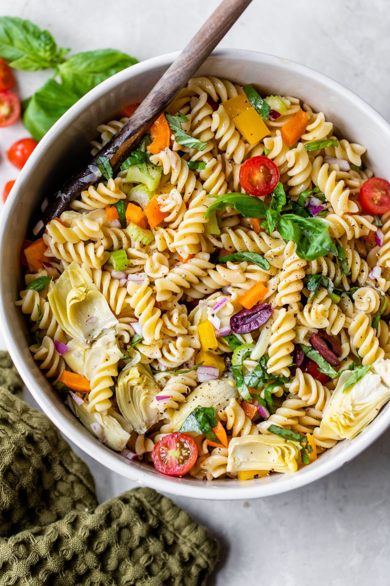

Italian Pasta Salad
Description
This colorful Italian Pasta Salad recipe is as delicious as it is vibrant! Packed with veggies like bell peppers, artichokes, tomatos and olives, this healthy pasta salad with homemade dressing is great summer side dish or light lunch. It's also perfect to prep ahead because it's even tastier the day.

Pasta salad is a classic summer staple that pairs well with grilled meats and makes a great picnic and cookout option. This Italian pasta salad is easy, delicious, and packed with fresh veggies. It’s a light side dish perfect for feeding a crowd and meal prepping! Make this to bring to your next barbecue or get-together with friends and family.
Ingredient needed
- Pasta - Pasta salads like this one, work great with any short pasta. We love fusilli, but bowtie (sometimes called farfalle), penne or rotini are all fine.
- Dressing - For the homemade vinaigrette, you’ll need olive oil, red wine vinegar, garlic, dijon mustard, Italian seasoning, sea salt & pepper.
- Artichoke hearts - Love the kick of flavor these add to the salad!
- Kalamata olives – I feel like some type of olive is necessary in an Italian salad. I personally prefer Kalamata olives, so that’s what I used, but feel free to use black olives if preferred.
- Veggies – We’re packing in the vegetables! In fact, there’s over a cup of diced bell pepper and a full cup of baby tomatoes! Add sliced celery and red onion for extra crunch and flavor.
- Fresh Basil – For a pop of color and a lovely herb taste.
How to make this salad
Italian pasta salad is one of the easiest recipes to toss together. The most time-consuming part of making this salad is cutting up all the vegetables.
- Boil pasta. Cook pasta according to package instructions until al dente.
- Make the dressing. While the pasta cooks, wgisk together extra olive oil, red wine vinegar, garlic, mustard, italian seasoning, salt, and pepper in a large bowl.
- Mix pasta + dressing. Drain the pasta and add it right into the dressing. Toss to coat. Let cool, tossing once or twice so the pasta can absorb all the flavors of the dressing.
- Add vegetables + serve. Stir in artichoke hearts, olives, bell pepper, tomatoes, celery, onion and basil, and stir well to combine. Serve and enjoy or chill until ready to serve.
Variations
It’s super easy to customize pasta salads with extra or different ingredients. Here’s some ideas:
- Add some cheese like mini mozzarella balls, crumbled goat cheese, cheddar cheese cubes, diced pepper jack or crumbled feta cheese.
- Mix in some protein like sautéed shrimp, chopped grilled chicken, cured meat like pepperoni, or crumbled bacon, Or keep it vegetarian and add chickpeas.
- Add even more veggies like shredded carrots, chopped cucumber, or sliced green onions.
- Spice it up with some cayenne pepper, crush red pepper flakes, or diced jalapenos.
- Use different fresh herbs like mint, persley, dill, or chives!
Tips
- Salt the pasta water. Salting the pasta water evenly seasons each noodle from the inside out and really adds to the flavor of the complete dish. And if it needs it, you can always add more salt to the finished salad. Read about how to properly salt your pasta water here. As a general rule of thumb, I add 1 teaspoon salt to 4 cups of water.
- Cook pasta to al dente. Over cooking your pasta even by just a minute will lead to a soggy pasta salad. The noodle soften as they sit in the dressing.
- Make ahead. This is a great recipe to make in advance. Let all of the ingredients soak up the dressing for al least 2 hours or overnight for best results. I always find pasta salad is better the next day.
Storage instructions
- Make ahead. This salad is great to make a day in advance of serving it because it gets testier over time. You can also mix vinaigrette together up to 2 days in advance, and store it in the refrigerator.
- storing leftovers. Store leftover salad in an airtight storage container in the refrigerator for about 5 days. Before serving again, give it a good stir and taste + season again as needed. This salad is great served at room temperature or chilled.